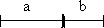

§ [43/75]
Das Wesen 1. ist das der Veränderlichkeit und Vergänglichkeit des Endlichen entnommene in sich seiende Ganze des mannigfaltigen Daseins. Diese vergängliche Mannigfaltigkeit macht zusammen das Unwesentliche aus. Das Wesen aber, als das Ganze der Bestimmungen des Daseins, muß 2. selbst Dasein, somit die Seite der Unwesentlichkeit haben, die folglich selbst wesentlich ist. Diese wesentliche Unwesentlichkeit ist die Erscheinung. - Das Wesen in seiner wesentlichen Unwesentlichkeit oder in seiner Erscheinung unterscheidet sich in Materie und Form.27)
Wir sind endliche Wesen - Vernunft unendliches Individuum - Einz[elne] Vernunft ist endlich im Gegenteil.
§ [44/76]
Das in der Erscheinung als solcher bleibende Wesen ist die Materie. Sie ist das bleibende, insofern sie für sich, ohne Bestimmung und Ungleichheit ist, welche der Form angehört. Die Materie für sich ist somit formlos und passiv; die Form kommt äußerlich an dieselbe. Die Materie ist aber das in sich schlechthin viele Außereinander, welches ebensosehr in einer sich selbst gleichen Kontinuität ist. Die Form nun ist nichts anderes als die sich in sich selbst unterscheidende Einheit; sie ist somit dasselbe, was die Materie; und ihre Wahrheit ist die Einheit der Materie und Form; die formierende und geformte Materie oder die Form, welche ihre Materie an sich selbst hat.
§ [45/77]
Die oberflächlichste Form der Materie ist, Ganzes zu sein, das aus Teilen besteht. Die Teile sind das unbestimmte Mannigfaltige überhaupt, das sich auf eine Einheit bezieht; diese Einheit, die nicht für sich, sondern wesentlich Beziehung dieses Mannigfaltigen ist, ist zusammengesetzt.
§ [46/78]
Es ist in diesem Verhältnis folgende Antinomie enthalten:
1. Die Materie besteht aus einfachen Teilen, und nur das Einfache ist das wahrhaft Existierende, indem die Zusammensetzung ein bloß äußerliches Verhältnis ist; das Zusammengesetzte als solches kann daher nicht an sich sein, sondern nur das Einfache ist an sich.
In der früheren Antinomie Hinausgehen von der absoluten Grenze zur Grenze überhaupt. Hier in 1. von der Grenze überhaupt zur absoluten Grenze, - einfacher Teil.
2. Die Materie besteht nicht aus einfachen Teilen, und die einfachen Teile oder Atome haben keine Existenz; denn das Atome ist durch ihre Ununterscheidbarkeit und Gleichheit miteinander wesentlich in Kontinuität; diese Kontinuität aber ist die bloße Möglichkeit einfacher Teile und hat ihre Existenz aufgehoben; die Materie ist somit ins Unendliche teilbar.
Zenons Beispiel: Der langsamer sich bewegende Körper, der einen Raum voraus hat, behält ein Voraus, weil, während der Zweite den Punkt erreicht, wo der Erste ist, der Erste wieder weiter kommt, - die unendliche Teilbarkeit der Zeit.
Kontinuität der Zeit, Möglichkeit des Einholens.

§ [47/79]
Die Antinomie des Verhältnisses des Ganzen und der Teile reduziert sich überhaupt auf folgende:
1. Das Ganze besteht aus den Teilen, und die Teile machen das Ganze aus. Aber
2. das Ganze besteht nicht aus den Teilen als Teilen, denn das Ganze ist nicht in dem Teile als Teil. Die Teile machen somit das Ganze nur aus in ihrem Zusammen. Aber das Zusammen der Teile ist das Ganze. Es ergeben sich also nur die beiden Tautologien: die Teile als Teile sind nur Teile; nur das Ganze ist das Ganze; oder Teil und Ganzes sind sich gleichgültig, und das Verhältnis fällt auseinander; d. h. es ist kein Verhältnis.
§ [48/80]
Die bestimmte Form in ihrer nach außen gehenden Tätigkeit ist die Kraft. Die Kraft ist 1. in sich selbst gegründet und aus sich selbst tätig. Sie hat einen bestimmten Inhalt; die Form aber ist wesentlich Einheit mit dem Inhalt. Sie ist 2. somit als Tätigkeit gleichfalls bestimmt. Das Bestimmtsein der Tätigkeit aber als solches ist Bedingtsein. Die Kraft ist also sowohl in sich selbst gegründet, als sie eine Bedingung hat. Sie ist somit ebensowenig ein absolutes Verhältnis als das Verhältnis des Ganzen und der Teile.
§ [49/81]
Die Bedingung der Kraft ist selbst eine Kraft als eine sollizitierende Tätigkeit. Dieses, das Bedingende, ist als Kraft selbst bedingt, und zwar durch die erste, oder sie ist nur dadurch sollizitierend, daß sie von der ersten sollizitiert wird, es zu sein. Da dieses Bedingtsein somit gegenseitig ist, so ist nur dieses Ganze das Unbedingte.